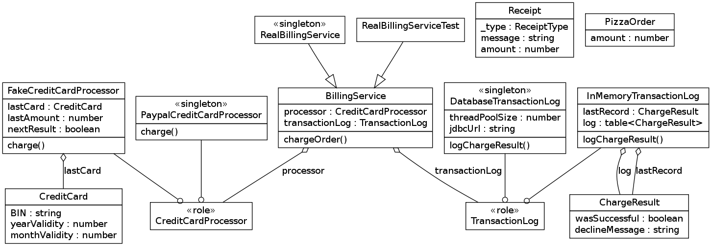

Examples
Pizza Ordering
This example is largely inspired by guice.

-- file PizzaOrder.lua
require 'Coat'
class 'PizzaOrder'
has.amount = { is = 'ro', isa = 'number', required = true }
require 'Coat.Types'
enum.ReceiptType = { 'SuccessfulCharge', 'DeclinedCharge' }
class 'Receipt'
has._type = { is = 'ro', isa = 'ReceiptType', required = true }
has.amount = { is = 'ro', isa = 'number' }
has.message = { is = 'ro', isa = 'string' }
-- file CreditCard.lua
require 'Coat'
class 'CreditCard'
has.BIN = { is = 'ro', isa = 'string', required = true }
has.monthValidity = { is = 'ro', isa = 'number', required = true }
has.yearValidity = { is = 'ro', isa = 'number', required = true }
class 'ChargeResult'
has.wasSuccessful = { is = 'ro', isa = 'boolean', required = true }
has.declineMessage = { is = 'ro', isa = 'string' }
-- file CreditCardProcessor.lua require 'Coat.Role' role 'CreditCardProcessor' requires 'charge'
-- file TransactionLog.lua require 'Coat.Role' role 'TransactionLog' requires 'logChargeResult'
-- file BillingService.lua
require 'Coat'
require 'Receipt'
abstract 'BillingService'
has.processor = { is = 'ro', does = 'CreditCardProcessor', inject = true }
has.transactionLog = { is = 'ro', does = 'TransactionLog', inject = true }
function method:chargeOrder (order, creditCard)
local result = self.processor:charge(creditCard, order.amount)
self.transactionLog:logChargeResult(result)
if result.wasSuccessful then
return Receipt.new{
_type = 'SuccessfulCharge',
amount = order.amount,
}
else
return Receipt.new{
_type = 'DeclinedCharge',
message = result.declineMessage,
}
end
end
-- file PaypalCreditCardProcessor.lua require 'Coat' singleton 'PaypalCreditCardProcessor' with 'CreditCardProcessor' function method:charge (creditCard, amount) -- TODO end
-- file FakeCreditCardProcessor.lua
require 'Coat'
require 'CreditCard'
class 'FakeCreditCardProcessor'
with 'CreditCardProcessor'
has.nextResult = { is = 'rw', isa = 'boolean' }
has.lastCard = { is = 'rw', isa = 'CreditCard' }
has.lastAmount = { is = 'rw', isa = 'number' }
function method:charge (creditCard, amount)
self.lastCard = creditCard
self.lastAmount = amount
return ChargeResult.new{
wasSuccessful = self.nextResult,
}
end
-- file DatabaseTransactionLog.lua
require 'Coat'
singleton 'DatabaseTransactionLog'
with 'TransactionLog'
has.jdbcUrl = { is = 'ro', isa = 'string', required = true }
has.threadPoolSize = { is = 'ro', isa = 'number', default = 10 }
function method:logChargeResult (result)
-- TODO
end
-- file InMemoryTransactionLog
require 'Coat'
class 'InMemoryTransactionLog'
with 'TransactionLog'
has.log = { is = 'rw', isa = 'table<ChargeResult>',
default = function () return {} end }
has.lastRecord = { is = 'rw', isa = 'ChargeResult' }
function method:logChargeResult (result)
self.lastRecord = result
table.insert(self.log, result)
end
-- file RealBillingService.lua
require 'Coat'
require 'PaypalCreditCardProcessor'
require 'DatabaseTransactionLog'
singleton 'RealBillingService'
extends 'BillingService'
bind.CreditCardProcessor = PaypalCreditCardProcessor
bind.TransactionLog = function ()
return DatabaseTransactionLog.new{
jdbcUrl = "jdbc:mysql://localhost/pizza",
threadPoolSize = 30,
}
end
-- file RealBillingServiceTest.lua require 'Coat' class 'RealBillingServiceTest' extends 'BillingService' bind.CreditCardProcessor = 'FakeCreditCardProcessor' bind.TransactionLog = 'InMemoryTransactionLog'
-- file main.lua require 'RealBillingService' local billingService = RealBillingService() assert(billingService.processor:isa 'PaypalCreditCardProcessor')
-- file test.lua
require 'RealBillingServiceTest'
require 'PizzaOrder'
require 'CreditCard'
local billingService = RealBillingServiceTest()
assert(billingService.processor:isa 'FakeCreditCardProcessor')
local order = PizzaOrder.new{
amount = 100,
}
local creditCard = CreditCard.new{
BIN = "12345678901234567",
monthValidity = 11,
yearValidity = 2010,
}
billingService.processor.nextResult = true
local receipt = billingService:chargeOrder(order, creditCard)
assert(receipt._type == 'SuccessfulCharge')
assert(receipt.amount == 100)
assert(billingService.processor.lastAmount == 100)
assert(billingService.processor.lastCard.yearValidity == 2010)
local record = billingService.transactionLog.lastRecord
assert(record.wasSuccessful == true)
print "ok"